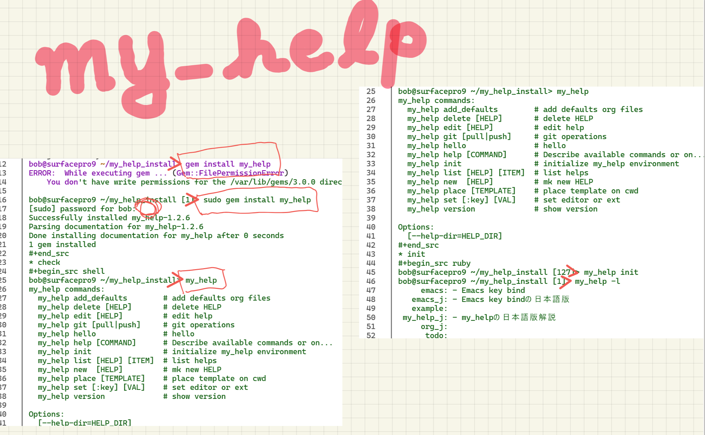
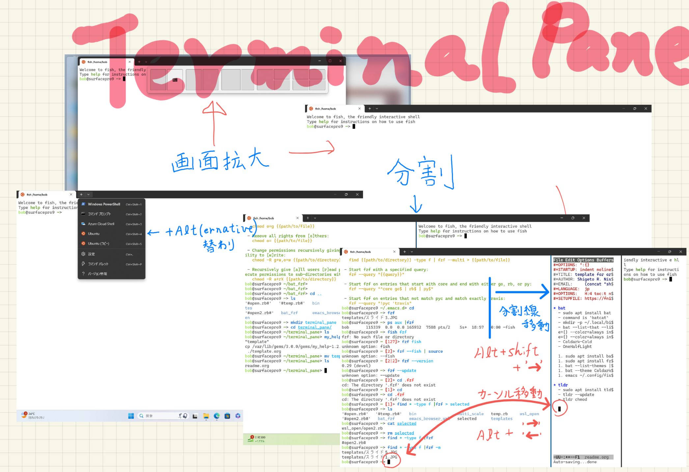
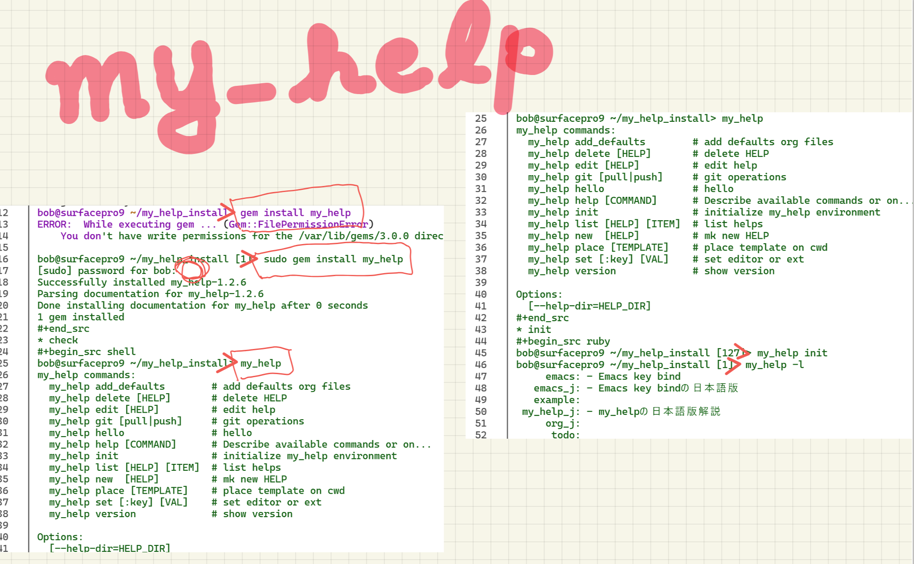
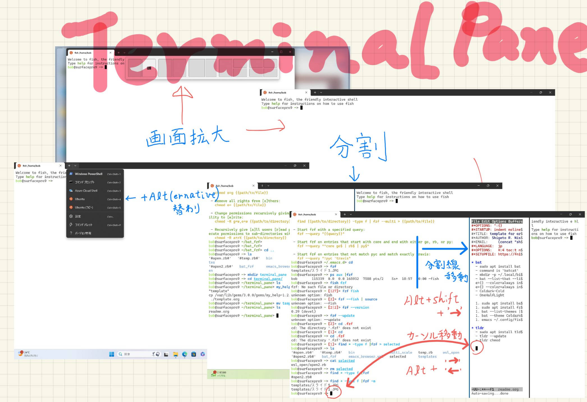

w2 my_help, terminal pane, and emacs -I
Table of Contents
 



1. GUI and CUIでのactivateあるいはcommand capture
 |
 |
アプリの役割分担(layer, 切り分け)
| 一般名詞（呼称） | 固有名詞 | package manager | config. |
|---|---|---|---|
| os | wsl, Ubuntu | apt, brew | |
| shell | fish, bash, zsh, PowerShell | ./config/fish/config.fish | |
| editor | emacs, vscode | elpa | ./emacs.d/init.el |
| language | Ruby, Python, C | gem, pip |
2. my_help
- gem install my_help
- my_help set editor 'emacs -nw'
- terminal pane
- Alt- open
- Alt-shift- -> 分割線が移動
- Alt -> Cursorが別画面に移動
- emacsの一時的終了と復活
- c-z
- fg (fore ground)
- ps (process status)
- emacsの完全終了
- c-x c-c
- emacs .config/fish/config.fish
- alias emacs "emacs -nw"
- shunkuntype
- add more info for 5hrs